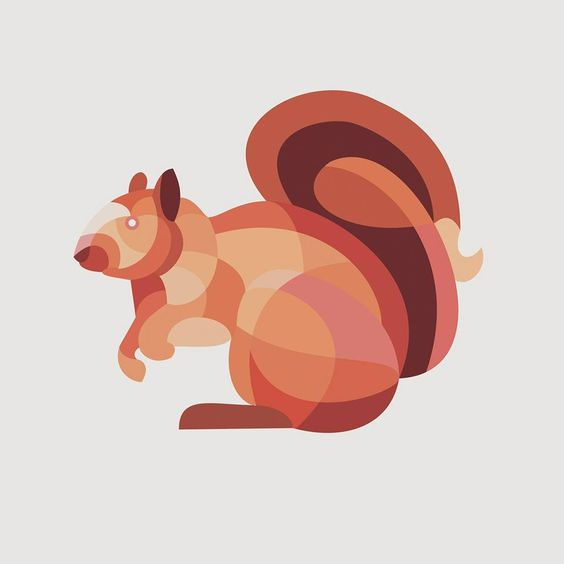
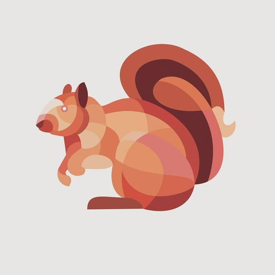

Resumo
A alternativa a usar o estilo realista de pintura é desenhar partes com cores solidas ou juntar elementos de cores solidas. A forma mais direta é usar sombras simplificadas (estilo de anime e desenhos animados). As formas das sombras podem ser convertidas em poligonos ou em formas curvas abstratas. Seguindo essa lógica de estilização, as imagens podem ser feitas de elementos repetidos, como circulos ou pontos (que é o pontilhismo), linhas (somete linhas), ou qualquer outro desenho repetido, como folhas ou palavras.
1. Sombras simplificadas (com ou sem contornos)
O formato que a sombra faz no objeto é desenhado. E a quantidade tons é reduzida. Você sabe que desenhos animados são pintados desse modo.


Pelagem de animais feitas nesse estilo
expand_all collapse_allCada mecha tem uma cor solida diferente da mecha ao lado. É trabalho um de ilustração manual, manual e bonito. Esse estilo é melhor para animais de pelo alto.


Relativo ao 3D
Esse estilo de pintura, em sombras simplificadas, é usado em bonecos 3d (digitais ou reais).
2. Sombras de todas as formas
Sombras de todas as formas: poligonos


Relativo ao 3D
É uma tendencia entre artistas 3D modelar com polígonos. Pois, modelos assim podem ser projetados em pepel. Depois de cada parte ser dobrada e colada, tem-se de volta o modelo 3D — nisso consiste o papercraft ("arte em papel").

Sombras de todas as formas:triângulos juntos


Sombras de todas as formas: formas curvas juntas
 

Artistas que exploram formas curvas
Thomas Pavitte
Thomas Pavitte inventou esse estilo de desenho no qual as formas das sombras seguem as curvas de vários círculos de diferentes tamanhos sobrepostos.


Trias Ysa
O estilo dessa artista é inspirado em bolhas de sabão. Veja que nesse caso as formas são bem orgânicas e tem cores solidas (algumas são contornadas). Uma estilização realmente original.


Mosaicos de vários formatos
Mosaico de triângulos
Pesquisando por "mosaic illustration", encontramos ilustrações como essas, mas mosaicos reais não tendem a ser feitos somente com triangulos.


Mosaico com formas retangulares e com polígonos


Mosaico de formas curvas


4.Círculos e pontos
Sei que você conhece o pontilhismo, mas esse estilo é um pouco diferente.


Linhas


Animais feitos de folhas
expand_all collapse_allSergey Kovalenko usa folhas para representar penas ou pelo.


Você já conhecia alguma dessas formas de fazer ilustrações? O que achou dessa seleção?